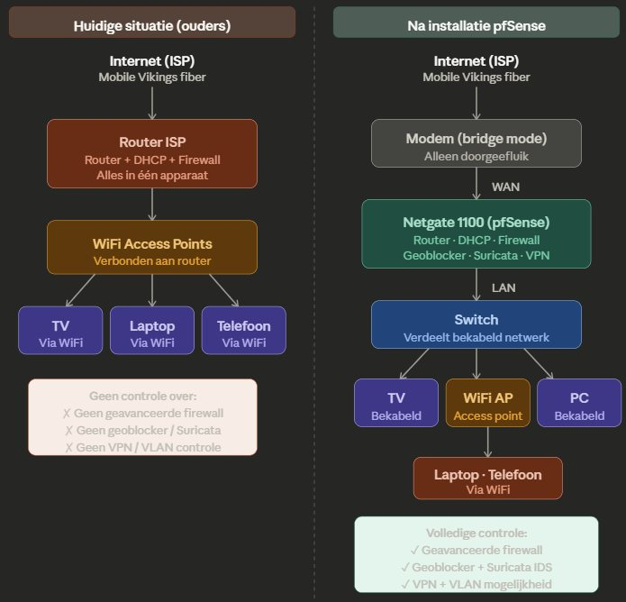

01 — Wie ben ik?
Hallo, ik ben Yannick.
Motherboard or snowboard?
Every board deserves an upgrade!
- Job
- Software consultant bij BlueIT
- Opleiding
- Graduaat systeem- en netwerkbeheer, Thomas More Geel
- In IT
- Sinds 2021, al 5+ jaar
- Probleemoplosser
- Communicatief
- Leergierig
- Stressbestendig
Achter het scherm
Buiten het scherm
- Kitesurfen
- Ski & snowboard
- Wandelen
- Tennistrainer
02 — Het WPL-bedrijf en de werkomgeving
BlueIT.
IT-bedrijf uit Grobbendonk. Mijn werkgever sinds juli 2023, en mijn werkplek voor dit graduaat.
1Experts
IT-consultancy en het leveren van IT-profielen voor projecten. BlueIT ontwerpt, installeert, ondersteunt en onderhoudt de IT-infrastructuur van klanten.
2Software
Bedrijfskritische software voor de haven, de petrochemie, de bouw en de voedingsindustrie.
- MainTasc
- DokPlan
- SyncTrace
3Solutions
IT-diensten en beheer om de infrastructuur van klanten vlot en betrouwbaar te laten draaien, met consultants op locatie.
Mijn plaats in het team
In welke tak en welk team werk je? Met wie werk je samen, en wie is je mentor?
De werkomgeving
- bv. Windows Server
- bv. Active Directory
- bv. Microsoft 365
- bv. ticketingsysteem
03 — Mijn werkplekopdracht
Van SCS naar BlueIT.
BlueIT nam SCS over. De volledige IT-omgeving van SCS moet daarom migreren en opgaan in de BlueIT-omgeving. Ik volg die migratie van begin tot eind mee.
1Analyseren
De SCS-omgeving onderzoeken en verschillen, afhankelijkheden en risico's met BlueIT bepalen.
2Documenteren
De omgeving en het migratieplan vastleggen: systemen, gebruikers, data en diensten.
3Integreren
Mee migreren en alles integreren in de BlueIT-omgeving.
Afgesproken prioritaire rollen
04 — Portfoliobewijsstukken
Mijn sterkste bewijzen.
Zes bewijsstukken uit mijn werkplekopdracht bij BlueIT, gekozen op basis van de afgesproken prioritaire rollen.
Titel van bewijsstuk 1
- Situatie
- Welk probleem of welke vraag?
- Wat ik deed
- Jouw concrete acties en de gebruikte technologie.
- Resultaat
- Wat werkte er op het einde? Liefst meetbaar.
Titel van bewijsstuk 2
- Situatie
- Welk probleem of welke vraag?
- Wat ik deed
- Jouw concrete acties en de gebruikte technologie.
- Resultaat
- Wat werkte er op het einde? Liefst meetbaar.
Titel van bewijsstuk 3
- Situatie
- Welk probleem of welke vraag?
- Wat ik deed
- Jouw concrete acties en de gebruikte technologie.
- Resultaat
- Wat werkte er op het einde? Liefst meetbaar.
Titel van bewijsstuk 4
- Situatie
- Welk probleem of welke vraag?
- Wat ik deed
- Jouw concrete acties en de gebruikte technologie.
- Resultaat
- Wat werkte er op het einde? Liefst meetbaar.
Titel van bewijsstuk 5
- Situatie
- Welk probleem of welke vraag?
- Wat ik deed
- Jouw concrete acties en de gebruikte technologie.
- Resultaat
- Wat werkte er op het einde? Liefst meetbaar.
Titel van bewijsstuk 6
- Situatie
- Welk probleem of welke vraag?
- Wat ik deed
- Jouw concrete acties en de gebruikte technologie.
- Resultaat
- Wat werkte er op het einde? Liefst meetbaar.
05 — Mijn portfolio
Ik als IT professional met PIT.
Vijf opleidingsrollen. Per rol de bewijsstukken die ik finaal selecteerde. Klik op een rol om ernaartoe te gaan.
IT professional
Professioneel handelen: plannen, communiceren met klanten en collega's, documenteren, verantwoordelijkheid nemen en blijven bijleren.

Bewijzen voor deze rol
- Project Thuisnetwerk ouders: problemen zelfstandig geanalyseerd, opgelost en gedocumenteerd
- Ander bewijs, bv. communicatie met klant, planning, documentatie
Netwerkbeheerder
Netwerken ontwerpen, configureren, beveiligen en beheren: switching, routing, VLANs, wifi en monitoring.
Bewijzen voor deze rol
- Project Thuisnetwerk ouders: firewall, bridge mode, DHCP, DNS over TLS en VPN
- Ander bewijs, bv. CCNA, netwerkschema, configuratie
Systeembeheerder
Servers en systemen installeren, configureren en onderhouden: Windows Server, Linux, Active Directory, virtualisatie en back-ups.
Bewijzen voor deze rol
- Project Thuisnetwerk ouders: firewall geïnstalleerd en beheerd, diensten en pakketten ingericht
- Ander bewijs, bv. Linux-server, Active Directory
Ondersteuner
Gebruikers helpen: incidenten analyseren en oplossen, uitleg en opleiding geven, en oplossingen documenteren.
Bewijzen voor deze rol
- Project Thuisnetwerk ouders: wachtwoordmanager en MFA ingesteld en uitgelegd
- Ander bewijs, bv. supporttickets, handleiding, opleiding gegeven
Bouwer
Oplossingen bouwen en automatiseren: scripts, infrastructuur en toepassingen opzetten en testen.
Bewijzen voor deze rol
- + Deze portfoliowebsite: HTML, Bootstrap, GitHub Pages, eigen domein en DNS
- Project Thuisnetwerk ouders: eigen script voor Dynamic DNS via de Cloudflare API
- Ander bewijs, bv. PowerShell-script, automatisatie
06 — Reflectie
Wat ik meeneem.
Technisch bijgeleerd
- bv. een technologie die nieuw was
- bv. iets wat je nu zelfstandig kunt
Soft skills
- bv. communicatie met klanten
- bv. plannen en prioriteren
Toekomst en acties
- eJPT behalen (INE Security)
- bv. verder in cybersecurity
- bv. CCNA-examen afleggen
07 — Discussie
Bedankt. Vragen?
Dit portfolio blijft online op yannickvanduppen.be.
vanduppenyannick@gmail.com